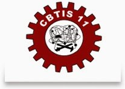
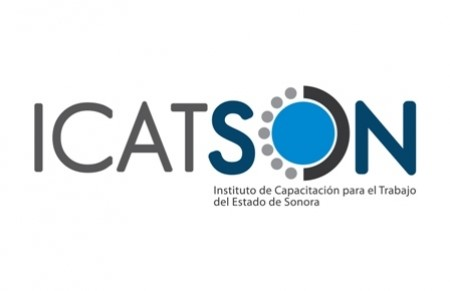
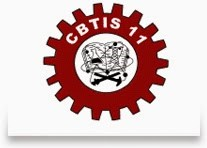
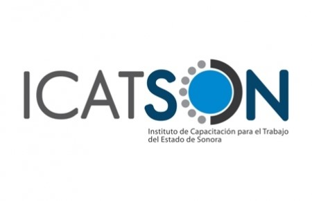

Formación

Preparatoria con especialidad en informática (2010-2013) Centro de Bachillerato Tecnológico, Industrial y de Servicios Núm. 11
Curso de informática, Microsoft Office (Microsoft Word, PowerPoint, Excel) (2014) ICATSON Hermosillo.
Preparatoria con especialidad en informática (2010-2013) Centro de Bachillerato Tecnológico, Industrial y de Servicios Núm. 11
Curso de informática, Microsoft Office (Microsoft Word, PowerPoint, Excel) (2014) ICATSON Hermosillo.
Durante la preparatoria mis talleres fueron de informática donde me enseñaron a usar Adobe Dreamweaver para hacer páginas web sencillas, Adobe Flash CS4 para hacer animaciones, CorelDraw para realizar diseños, también la lógica de programación donde me enseñaron escribiendo el programa en hoja en lenguaje natural para después realizar diagramas de acciones y usando Code::Blocks IDE practicábamos C++, también utilice Visual Basic para hacer aplicaciones sencillas. En clase de redes aprendiendo las topologías básicas, como funciona el internet a lo mas que llegamos es a ponchar un cable con RJ-45 y conectar dos computadoras entre si. En la universidad ya aprendí más metodologías, programación por objetos, redes, servidores, desarrollo, nuevos lenguajes de programación, a planear y resolver problemas.